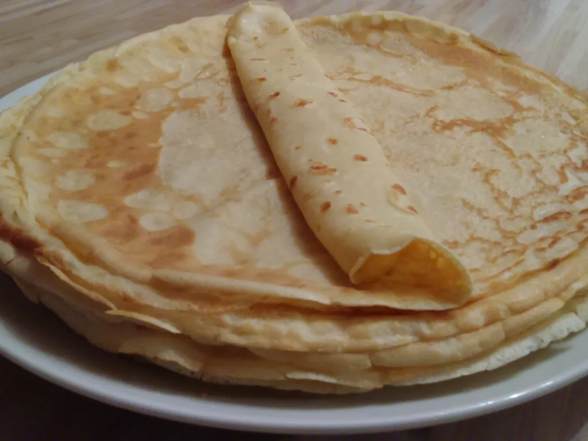

Pancakes

Description
Traditional Eastern Europe pancakes, the main difference
between the American ones are that they are thiner and can be rolled
with jam, nutella etc.
Ingredients
- 1 egg
- 200 g of flour
- 200 ml of milk
- 1 spoon of oil
- 200 ml of water
- 1 tablespoon of salt
- 1 tablespoon of sugar
How to do it
- Put the eggs into the bowl then mix them, after add the flour, salt, sugar, oil and milk.
Mix everything together until there aren't any lumps of flour left.
The mixture should be inbetween thick and watery if not add watter or milk to make it like that.
Let it sit for 20 mins.
- Oil with a few drops and heat up the pan where you gonna make the pancakes,
you have to do it every time when you start to pour a new portion.
- Pour the mixture into the pan, I recommend a soup ladle filled halfway,
evenly or into one spot then do circles with the pan that does the job also.
Leave it 1-2 mins on one side then turn it around the other.
- Put the pankcakes on a plate and stack them then after you are done
serve them with some jam or nutella.
Back